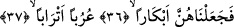

Birinci takdire göre, bir önceki âyet-i kerîmede yer alan “füruş/yataklar” kelimesinin,
üzerlerinde yatan kadınlara açıkça delâlet etmesi sebebiyle bu âyet-i kerîmede onlardan
zamirle bahsedilmiştir. Buna göre âyet-i kerîmenin mânâsı şöyle olur: Biz gerçekten
gerek yoktan meydana getirmek gerekse hayata iâde etmek bakımından o kadınların
yaratılışlarını bir doğum olmaksızın yeniden gerçekleştirdik. “Yoktan meydana
getirmek”, Allah’ın cennette bir doğum olmaksızın yarattığı hurîlerle ilgilidir. “Hayata
yeniden iâde etmek” ise, yaşlanmış koca karı iken ruhları alınmış dünya kadınlarıyla
ilgilidir.
Hadis-i şerifte: “Cennette yepyeni yaratılan o kadınlar, saçları ağarmış, göz
çukurları çapaklanmış kadınlar oldukları halde ruhları alınmış kadınlardır. Allah
onları yaşlılıktan sonra yaşıt bâkireler olarak kılacak, eşleri onlara her
vardıklarında onları bâkire olarak bulacaklardır” buyurdu. Hz. Âişe (r.a.) bunu
işitince, “onların ağrıları olacak mı?” diye sorması üzerine Peygamberimiz (s.a.),
“Orada ağrı olmaz” buyurdu.[206] Nitekim Allah Teâlâ dünyada Zekeriyya (a.s)’a bu
hayatı yaşatmış ve “Biz onun da duâsını kabul ettik ve ona Yahya’yı verdik; eşini de
kendisi için (çocuk doğurmaya) elverişli kıldık” (el-Enbiyâ 21/90) buyurmuştur.
Hasan Basrî (r.h.)’e; âyette bahsedilen “ıslah” elverişli kılma”nın ne demek olduğu
soruldu. O da şu cevabı verdi: Allah onun eşini yaşlandıktan sonra gençleştirdi ve
çocuk doğuramaz kısır biri iken çocuk doğuracak halde kıldı. Bundan sonra gelmekte
olan âyet-i kerîmede bu konuda şöyle buyurulmaktadır:
36-37. Onları, bâkireler kıldık. Eşlerine düşkün ve yaşıt.
Onları, yaşlanmış koca karılar iken genç kızlar hâline getirdik. Âyet-i kerîmede geçen (ebkâr) kelimesi bâkire anlamındaki bikr kelimesinin çoğuludur. Masdarı
bekâretdir.
Rağıb şöyle demiştir: Bükra günün ilk saatleri demektir. Günün diğer vakitlerinden
daha önce geldiği için bu kelimeden “acele etmek” anlamı çıkarılmıştır. Bu sebeple her
acelesi olanı ifâde için (bekkere) denir. Bekâreti bozulmamış olan kadına bikr adı
verilmiş olması, dul kadına göre öncelikle tercih edilmesinden dolayıdır.
Sa’dî Müftî demiştir ki: Yepyeni yaratmak anlamındaki inşâdan “yoktan meydana
getirmek” mânâsı kasdedilirse “ca’l” fiili “yaratmak” mânâsına olup ebkâr kelimesi hâl
olur. Şâyet inşâ fiilinden “hayata yeniden iâde etmek” anlamına alınırsa “ca’l” fiili
“kılmak” mânâsına olup, ebkâr kelimesi ikinci meful durumundadır.
Bâzı âlimler şöyle demişlerdir: Âyet-i kerîmede “Biz o kadınları bâkireler kıldık”
buyrulmuş olması, bu kadınların dünya kadınları olduğunu gösterir. Çünkü, bilindiği
gibi onlar ilk önce bâkireler olarak yaratılmışlardır. Bunlar, dünyada iyi ameller